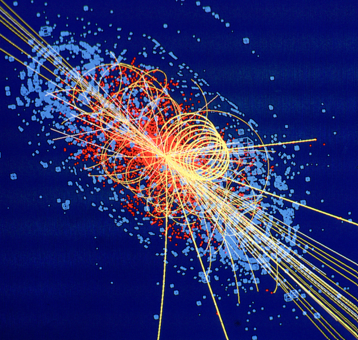

Domaine de physique
Physique des particules

Physique des particules
La physique des particules cherche les constituants élémentaires de la matière et les interactions qui les relient. Elle s'appuie sur des collisions à haute énergie pour transformer l'énergie en nouvelles particules et observer leurs produits de désintégration.
Les constituants de la matière
Le modèle standard classe les particules de matière en quarks et leptons. Les protons et les neutrons ne sont pas élémentaires : ils sont composés de quarks, liés par l'interaction forte. L'électron appartient à la famille des leptons.
Les interactions fondamentales
Quatre interactions structurent notre description : gravitation, électromagnétisme, interaction faible et interaction forte. Dans le modèle standard, les interactions sont médiées par des bosons. Le photon porte l'électromagnétisme, les gluons l'interaction forte, et les bosons W et Z l'interaction faible.
Masse et boson de Higgs
Le champ de Higgs contribue à donner leur masse à plusieurs particules élémentaires. La découverte du boson de Higgs a confirmé une prédiction majeure du modèle standard, sans pour autant répondre à toutes les questions : matière noire, masses des neutrinos et asymétrie entre matière et antimatière restent ouvertes.
De l'infiniment petit au cosmos
Les particules sont aussi une fenêtre sur l'Univers. La cosmologie étudie l'origine, l'évolution et la structure du cosmos ; les conditions extrêmes de l'Univers primordial permettent de tester les modèles de particules. Chaque résultat doit être confronté aux mesures et à leurs incertitudes.